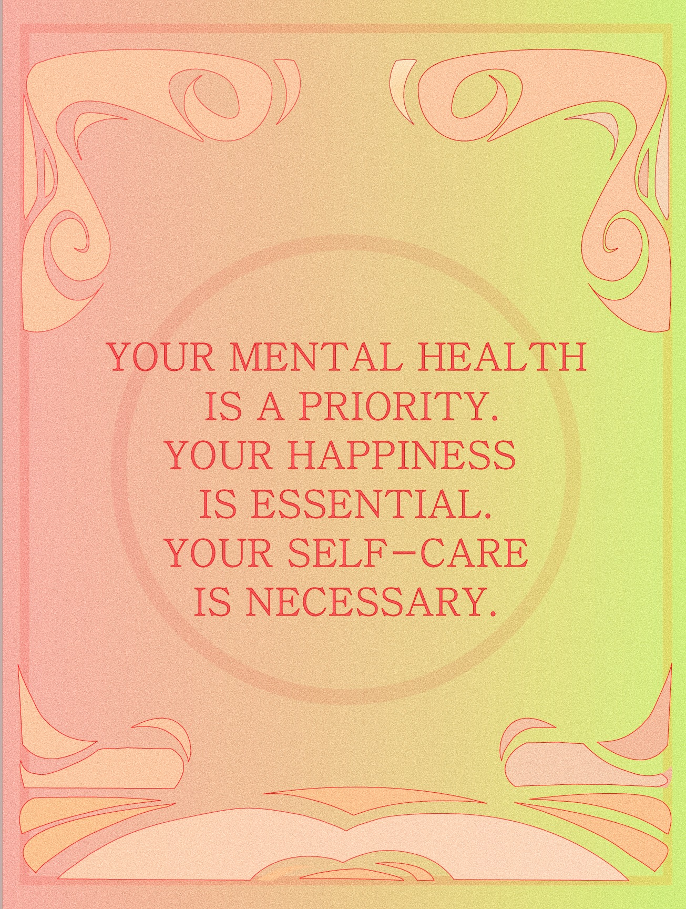

Mental health can often feel like a struggle between inner pain and the hope for healing. This website explores how the stigma surrounding mental health can make you feel alone, but recovery is always possible. Join us as we break the stigma, explore ways to cope, and provide resources to support you on your journey to healing.